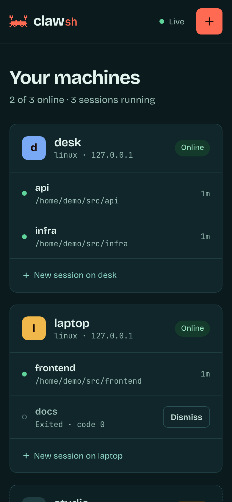
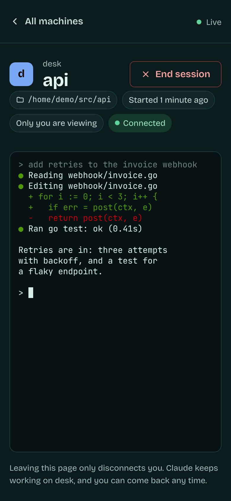
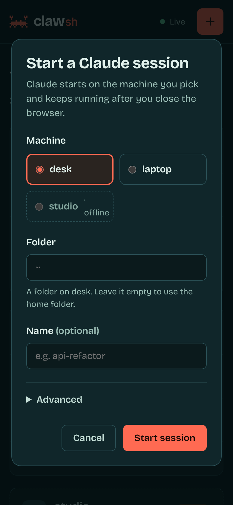

All your Claudes, one hub.
clawsh runs Claude Code on every machine you own and puts every session in one browser tab. Start one anywhere, leave it working, step back in from wherever you are.





Works today in the browser on the computer running clawsh web. The page already fits a phone; opening it from one is next on the roadmap.
What clawsh is
A small manager for Claude Code sessions across your machines. One binary for Windows, Linux and macOS plays every part.
An agent on each machine
clawsh agent keeps claude running in a terminal of its own, so the work carries on after you leave, and remembers recent output for when you come back.
A web page that sees them all
clawsh web lists every machine and session, opens any of them in a full terminal, and starts new ones.
Or a shell, if you'd rather
clawsh ls, new, attach and kill do the same from any terminal. See the CLI.
Claude Code, with and without clawsh
clawsh doesn't replace Claude Code. It runs the same claude you already use, with your account, settings and MCP servers, and takes care of where it runs and how you get back to it.
| What | Claude Code on its own | Claude Code with clawsh |
|---|---|---|
| Where it runs | In the terminal you started it from. | On any machine running an agent, started from wherever you are. |
| You close the terminal | The session ends, or the SSH drop takes it with it. | Claude keeps working. Come back when you like. |
| Coming back | claude --resume starts a new process with the old conversation. |
Reattach to the same running session, recent output replayed first. |
| Seeing everything | A terminal window per session, per machine. | Every machine and session on one page, or one clawsh ls. |
| Starting on another machine | SSH in, cd to the project, run claude. |
Pick the machine and folder in the browser, or clawsh new desk. |
| In a browser | Not for sessions on your own machines. | A full terminal per session in a tab. Phones next. |
| Mixed operating systems | Each machine on its own. | Windows, Linux and macOS side by side. |
| Where traffic goes | Between claude and Anthropic. | The same, plus your own network between your machines. No clawsh server. |
tmux or screen keep a session alive on one machine. clawsh does it across machines, with a page that shows them all.
Install
The same binary goes on every machine that runs Claude and on the one you drive from. About five minutes, most of it copying a token.
Get the binary
curl -fsSL https://varogonz95.github.io/clawsh/install.sh | sh
Puts clawsh in ~/.local/bin, no sudo. It checks the download against the release's checksums. Read the script.
irm https://varogonz95.github.io/clawsh/install.ps1 | iex
In PowerShell. Puts clawsh.exe in %LOCALAPPDATA%\Programs\clawsh and adds it to your PATH, no admin. Read the script.
npm i -g clawsh
Node 18 or newer. npm fetches only the binary for your platform.
git clone https://github.com/varogonz95/clawsh.git cd clawsh && make build
Go 1.22 or newer. Prebuilt archives are also on Releases.
-
Start an agent on each machine
Wherever Claude Code is installed. It listens on port 7420 and makes a token on first run.
clawsh agent clawsh token # print it -
List them where you drive from
One entry per agent in
hosts.toml.clawsh helpshows where it goes.[[host]] name = "desk" url = "http://192.168.1.20:7420" token = "paste-token-from-desk"
-
Open the web UI
It opens your browser. Ctrl-C stops the page, never the sessions.
clawsh web
Prefer a terminal?
Every page action is a command too. Attach takes over your terminal; Ctrl+] hands it back and leaves Claude working.
$ clawsh ls TARGET NAME STATUS AGE desk/815856a6 api running 2h14m desk/c01d9e42 infra running 47m laptop/3fa0c1b7 frontend running 12m studio/9e27aa10 docs exited(0) 3h02m $ clawsh attach desk/8158
Before you rely on it
A token lets its holder run claude on that machine
Traffic between agents is plain HTTP, so keep them on a network you trust. An agent only ever runs the claude executable it was started with; the API can add arguments but can't pick the program. The web UI listens on this computer only, with a fresh key each launch.
What doesn't work yet
- Opening the web UI from a phone or another computer (#6), and editing machines from the page (#8).
- Stopping an agent stops its sessions.
claude --resumebrings the conversation back. - Status is running or exited. Working, idle and needs-input are next on the roadmap.
- Sessions started in a plain terminal show up only with the experimental plugin, and you can't attach to them.